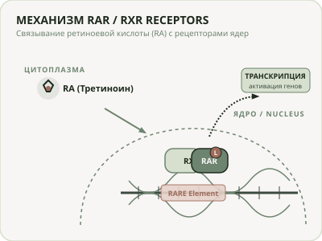
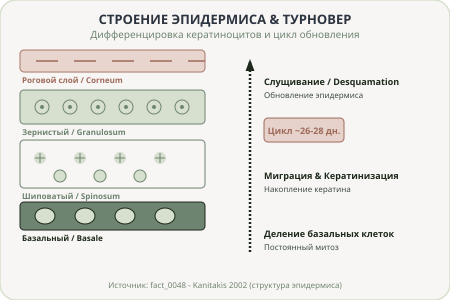

Терапевтический профиль, механизмы действия и клинические протоколы
Клеточные рецепторы и пути метаболической конверсии
Основной путь транскрипции генов

Каскад окисления ретиноидов в кератиноцитах
Слабый эфир, требует 3 шага конверсии до ретиноевой кислоты.
Стимулирует коллаген, требует 2 шага метаболического превращения.
Высокоактивный ретиналь, требует всего 1 шаг конверсии.
Активный третиноин, опосредует свое действие через рецепторы RAR/RXR.
Клинические эффекты золотого стандарта коррекции

Адапален против Тазаротена
Селективно связывается с rar-beta и rar-gamma рецепторами, снижает риск раздражений.
Связывается с rar-beta и rar-gamma, крем 0.1% клинически эффективен при фотоповреждении.
Биологическая активность ретинола, ретиналя и эфиров
Улучшает гидратацию и эластичность кожи, требует одного метаболического шага.
Стимулирует синтез коллагена и ингибирует матриксные металлопротеиназы.
Мягкая нано-форма, снижает воспалительные и невоспалительные акне-поражения.
Параметры эффективности ретиноидов третьего поколения
Концентрация крема, доказавшая эффективность при глубоких морщинах.
Конверсия до активной кислоты, минимизирует раздражения.
Клинически подтвержденных фактов в нашем графе ретиноидов.
Меры предосторожности в клинической практике
Топические ретиноиды противопоказаны к применению в период беременности и лактации из-за потенциальных рисков системной тератогенности.
Сводное резюме клинических рекомендаций по ретиноидам